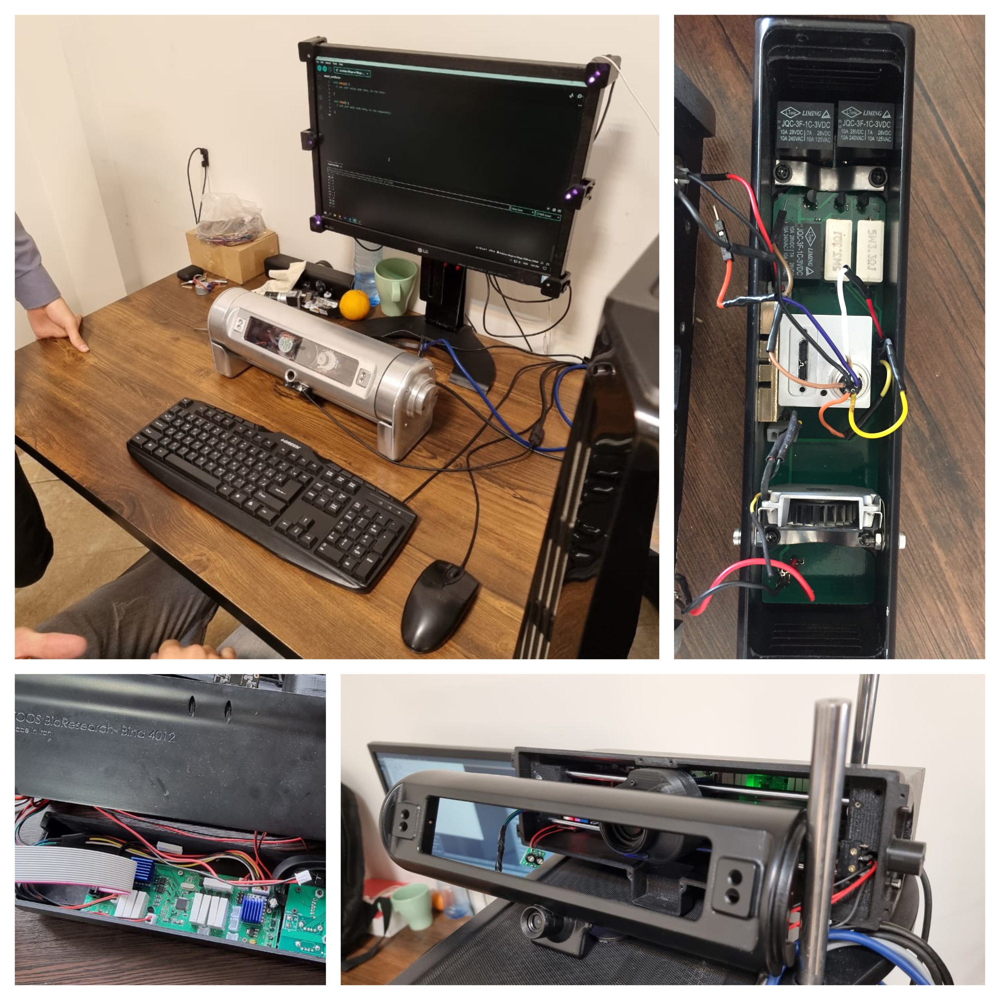
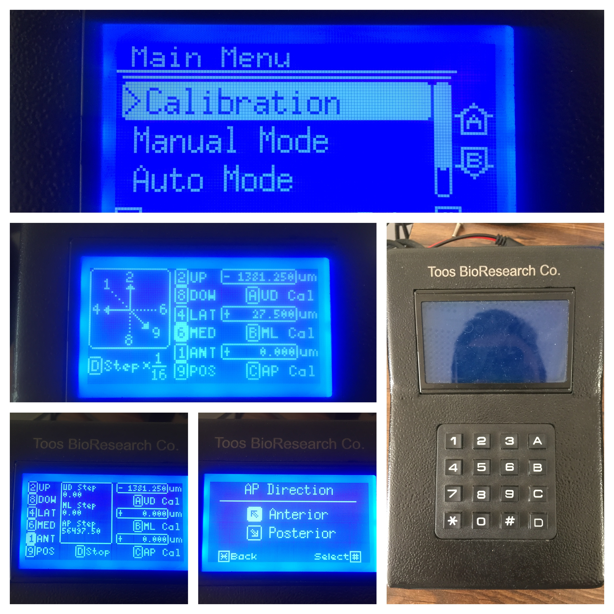
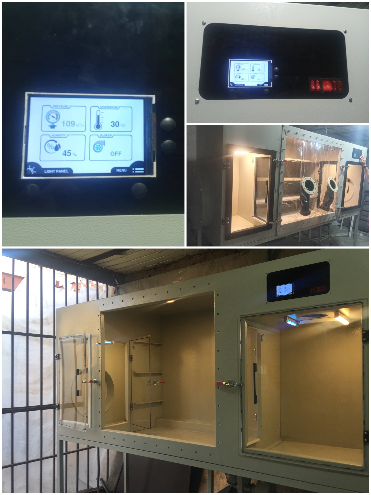
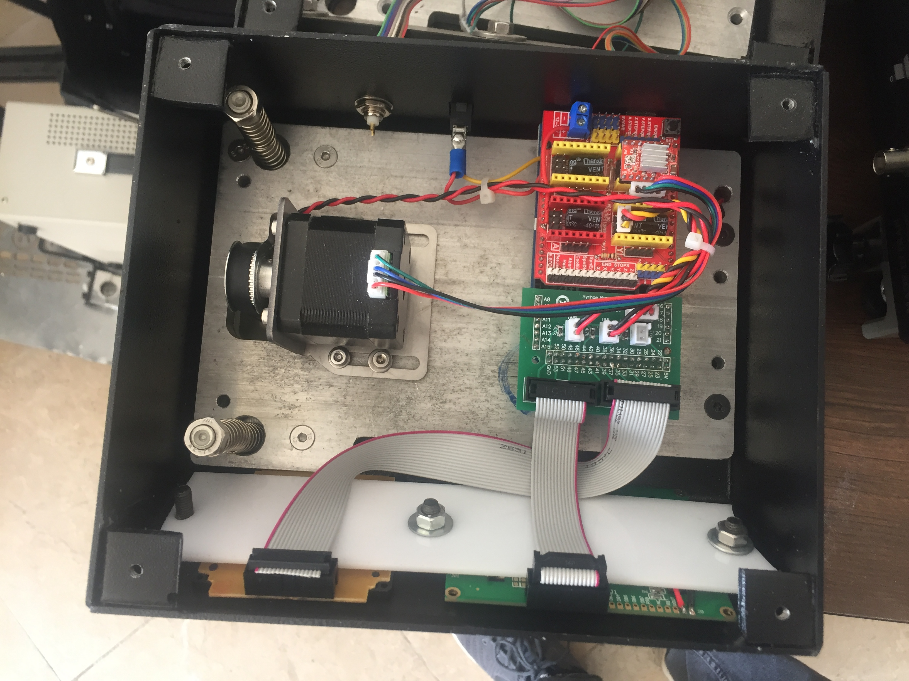

Custom-designed neuroscience research equipment developed during my work at Toos Bio Research. These precision instruments are essential tools for behavioral neuroscience studies, enabling accurate data collection and controlled experimental environments.

Advanced eye tracking system designed for monitoring pupil dilation, gaze direction, and eye movement patterns in behavioral research. Features high-speed camera integration and real-time data processing capabilities.

Precision stereotaxic apparatus providing three-dimensional positioning control for neuroscience research. Essential for accurate electrode placement and targeted interventions with micrometer-level precision.

Specialized isolation chamber designed to eliminate environmental variables during experiments. Features sound attenuation, controlled lighting, and environmental monitoring for reproducible experimental conditions.

Programmable syringe pump system for precise fluid delivery in research applications. Offers customizable flow rates, timing protocols, and volume control essential for pharmacological studies and behavioral experiments.